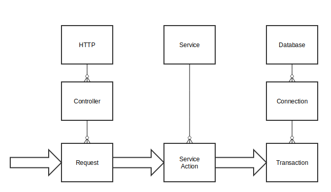

Тулкит для построения параллельных, распределенных и отказоустойчивых приложений
| Объект | Актор | |
|---|---|---|
| Вызов | counter.incr(n) | counter ! Incr(n) |
| Запрос | counter.get() ⇒ Int |
counter ? Get ⇒ Future[Int] |
| Параллельность | есть | нет |
| Изменяемые аргументы | возможны | невозможны |
class CounterActor extends Actor {
import CounterActor._
private var value: Long = 0 // state
def receive = { // behaviour
case Incr(n) ⇒ value += n
case Get ⇒ sender() ! value
}
}
object CounterActor { // protocol
case class Incr(n: Long)
case object Get
}
object Main extends App {
val system = ActorSystem("DemoSystem")
val counterActor: ActorRef =
system.actorOf(Props[CounterActor], name = "counter")
counterActor ! Incr(1)
println(Await.result(counterActor ? Get, 1.minutes))
}
Приватное состояние без синхронизации. Сериализация операций над внешним миром, например актор для:
Разделяемое изменяемое состояние + параллелизм = проблемы
Разделяемое изменяемое состояние + параллелизм =
«Share nothing» архитектура
ActorRef — идентификатор актора.
Факт: «Титаник» утонул из-за плохого разделения на отсеки.
Виды ошибок в автомате с газировкой:
Иерархия: DriverActor → ConnectionActor → TransactionActor
Пример для ConnectionActor
override val supervisorStrategy =
OneForOneStrategy(maxNrOfRetries = 10, withinTimeRange = 1 minute) {
case _: ConnectionResetException ⇒ Restart
case _: DatabaseWasDeletedException ⇒ Stop
case _: SharedMemoryCorruptionException ⇒ Escalate
}
Кроме быстрого перезапуска есть еще exponential back off
Пример: один запрос – три иерархии. 
Ожидание остановки актора:
context.watch(anotherActorRef)
Либо ловим сообщение Terminated(actorRef), либо «death pact» — останавливаемся вместе.
Сообщение теряется при:
Только одна попытка доставки — «at most once delivery»
Сбой доставки нельзя детектировать.
Решение: протоколы с подтверждением успеха обработки.
Результат: подтвержденный успех или timeout.
Каждое сообщение должно иметь unique id (например UUID). В потоках еще применяют sequence number'а.
«At least once delivery» — retry при таймауте.
«Exactly once delivery» — retry при таймауте + фильтрация дублей получателем.
Сложные схемы доставки обычно не нужны на каждом плече.
Как в TCP: клиент → цепочка акторов → получатель
Клиент ждет подтверждения от получателя. Остальные акторы в цепочке не контролируют доставку.
Применяется при пакетной обработке.
«Happy path» — игнорируем сбои при первичной обработке.
«Self heal» – периодически проводим сверку и запускаем в обработку то, что не смогли обработать ранее.
«Предохранитель», которые можно вставлять между подсистемами.
«Разрывает цепь» при частых ошибках.
«Замыкает цепь» после таймаута и после успешных пробных запросов.
Можно использовать вне Akka.
Проблема: быстрый producer + медленный consumer = Out Of Memory
Решение: выбрасываем то, что не успеваем обработать
Решение: замедляем producer'а (back pressure)
Раньше делали сами; теперь всегда используем akka-streams.